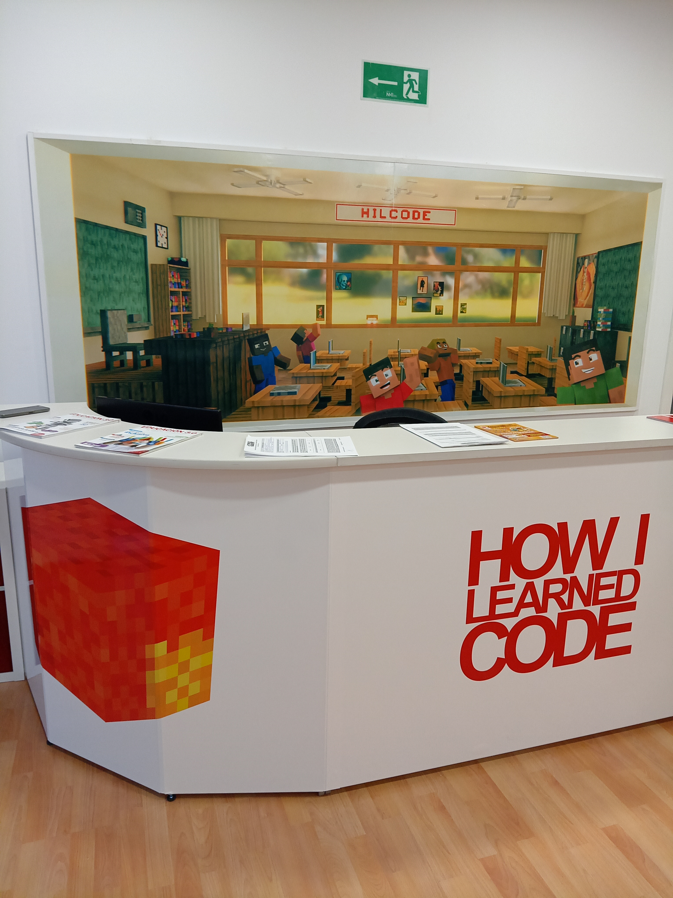
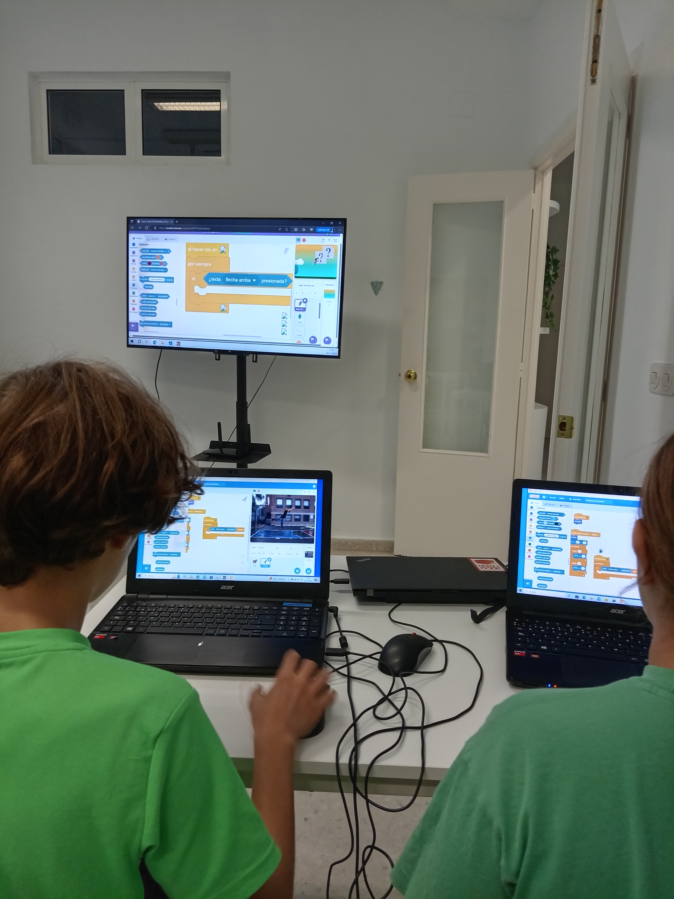
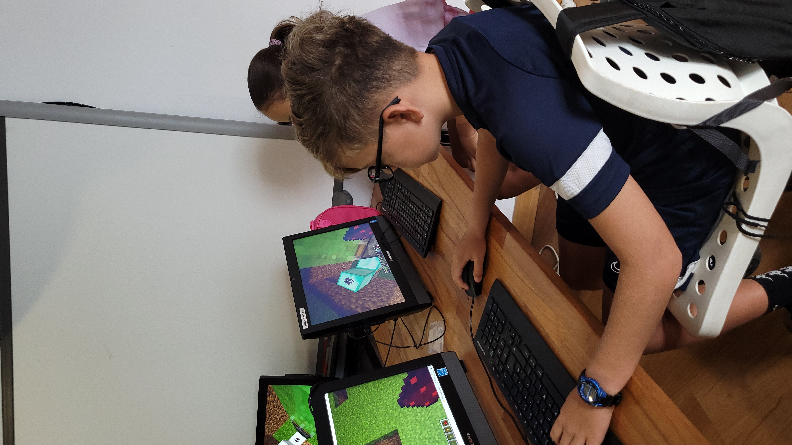
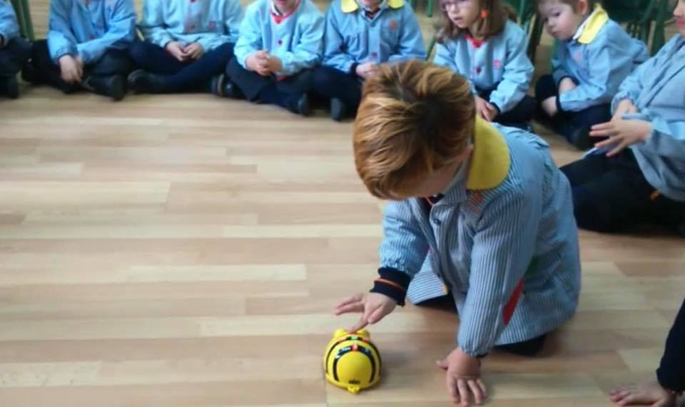
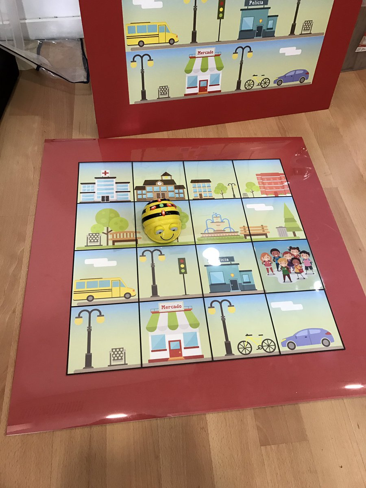

Introducción

Esta guía nace como continuación de la experiencia compartida durante la visita del profesorado participante en el programa Erasmus+ a nuestra academia.
Durante estos días, hemos tenido la oportunidad de intercambiar metodologías, explorar herramientas digitales y, sobre todo, reflexionar sobre cómo integrar la tecnología en el aula de una forma significativa, creativa y adaptada a las nuevas necesidades educativas.
El objetivo de este documento es ofrecer una recopilación de los recursos, plataformas y actividades que hemos trabajado juntos, para que podáis seguir explorándolos, adaptarlos a vuestro contexto educativo y aplicarlos tanto en el aula como en proyectos propios.
A lo largo de la guía encontraréis herramientas orientadas a diferentes edades y niveles, desde la iniciación al pensamiento computacional en infantil, hasta la creación de videojuegos, diseño 3D, robótica o introducción a la inteligencia artificial.
Todas ellas comparten un enfoque común:
- Aprender haciendo (learning by doing)
- Fomentar la creatividad y la experimentación
- Desarrollar el pensamiento crítico y computacional
- Convertir al alumnado en creador, no solo en consumidor de tecnología
SCRATCH – Programación creativa y pensamiento crítico
Scratch es una plataforma de programación visual diseñada especialmente para niños y niñas. A través de bloques de colores que encajan como piezas de un puzle, pueden crear animaciones, historias interactivas, juegos y mucho más, sin necesidad de saber código tradicional.

1.2 Proyectos para trabajar nuestros contenidos
El gato que baila
OriginalMini Retos Debug-it
Explicados en la guía teórica1.3 Recursos
-
Introducción a la programación con Scratch en 12 sesiones (Documento guía)
Enlace: Recursos de Scratch para profes -
Scratch para docentes (Documento guía)
Enlace: Guia docentes taller Scratch 3.0.pdf -
Documento resumen de actividades Vedruna
Enlace: Memoria de actividades AACC - Vedruna.pdf -
Tarjetas de actividades de Scratch
👉 Descargar PDF
Recursos recomendados para trabajar la IA a través de la programación por bloques
-
1. Explorando la IA con bloques de detección facial de Scratch
👉 Tutorial -
2. Mezcla y Muévete con IA
👉 Tutorial -
3. Fiesta de baile: Edición IA
👉 Tutorial -
4. Laboratorio de música: Jam Session
👉 Herramienta -
5. La IA es divertidísima
👉 Tutorial
MINECRAFT
Minecraft es mucho más que un juego: es un entorno donde pueden experimentar con lógica, diseño y pensamiento computacional. En clase utilizamos Minecraft Education Edition para trabajar conceptos de electrónica digital y electricidad de forma visual y divertida.

CONTENIDOS GENERALES PARA 12 SESIONES
1. Fundamentos del Redstone y la electrónica real
- Diferencia entre electricidad y electrónica
- Señales: Digitales y analógicas
- Componentes de un circuito: Entradas y salidas
- Estados de las señales digitales (1/0 – On/Off)
- Procesos automáticos
- Conductores y aislantes
- Potencia
- Redstone: Actualización y Tics de Redstone
- Señales Vs pulsos
2. Uso de las puertas lógicas
- Conceptos
- Tabla de verdad
- Puertas lógicas: NOT, OR, AND, XOR
- Puertas negadas: NOR, NAND y XNOR
- Circuitos lógicos: Función lógica, Operaciones lógicas básicas, Simplificación de una función
3. Código binario
- Conceptos básicos: El código y su peso
- Codificador y Decodificador
- Calculo: operaciones binarias
- Código ASCII
4. La memoria de las máquinas
- Flip-Flops: T, D, RS, JK
- Célula de memoria
- Temporizadores: Concepto de frecuencia, Tipos de temporizadores en minecraft
- Contador, Array de memoria, Reloj
5. Introducción a la domótica
- Conceptos básicos
- Tipos principales de dispositivos domóticos: Confort, Seguridad, Eficiencia energética
- Temporizadores y Sensores
Electrónica digital con Minecraft en 12 sesiones (Documento guía)
Enlace: Abrir DocumentoVideos - Minecraft Live 2020
Videos - Introducción a la electrónica digital con Play Hacks
Recursos recomendados para trabajar la IA (solo con Minecraft education)
En las actividades que os dejamos a continuación, los alumnos colaboran con asistentes de IA dentro del juego. Las actividades están planteadas como misiones y retos guiados, ideales para trabajar de forma autónoma en casa.
- 1. Hora de la IA: La primera noche
- 2. Fantastic Fairgrounds
- 3. Generación IA
- 4. IA para el bien (Incendios forestales)
- 5. Reed Smart: detective de IA
- 6. CyberSafe AI: profundiza
TINKERCAD - Diseño 3D

Tinkercad es una plataforma online gratuita que permite a niños y jóvenes iniciarse en el diseño 3D de forma sencilla y visual. Con una interfaz muy intuitiva basada en figuras geométricas, pueden crear desde objetos simples hasta modelos complejos listos para impresión 3D.
Explorar tutoriales* Solo necesitan crearse una cuenta de estudiante gratuita en tinkercad.com
MAKECODE ARCADE - Crea tus propios videojuegos retro
MakeCode Arcade es una plataforma online de Microsoft para aprender a programar creando videojuegos tipo arcade, como los clásicos de 8 bits. Con bloques de código similares a los de Scratch (y también con posibilidad de usar JavaScript o Python), los niños pueden diseñar personajes, niveles, lógica de juego ¡y jugar a sus propias creaciones!

ROBLOX - Crea juegos 3D y aprende a programar
Roblox Studio permite a los jóvenes crear sus propios videojuegos 3D y mundos interactivos utilizando programación con el lenguaje Lua. Es una herramienta potente con un gran potencial educativo, especialmente para quienes quieren ir más allá del jugador y convertirse en creadores.

MICRO:BIT - Programación y electrónica en una placa
Micro:bit es una pequeña placa programable que permite a los niños aprender conceptos de programación, electrónica y sensores de una forma práctica y visual. Con su matriz de luces LED, botones, sensores y conexión por USB o Bluetooth, pueden crear proyectos interactivos como juegos, termómetros, alarmas o brújulas digitales.
Editor de MakeCode
MAKEY MAKEY - Inventos interactivos con objetos cotidianos
Makey Makey es una placa electrónica que permite convertir casi cualquier objeto conductor (como frutas, plastilina o incluso grafito) en un botón o una tecla. Es una herramienta fantástica para introducir conceptos básicos de electrónica y programación de forma tangible, creativa y lúdica.
Proyectos y Ejemplos
- Proyecto destacado: GUITAR HERO
- Introducción a Makey Makey: Banana Bongos
- ¿Qué materiales son conductores?
- Encender un LED con Makey Makey
- App del piano interactivo
- Circuito con lápiz: Dibuja un instrumento
BEE-BOT - Iniciación a la programación y pensamiento lógico

Bee-Bot es un pequeño robot educativo con forma de abeja diseñado para introducir a los más pequeños en el mundo de la programación de una forma manipulativa, visual y muy intuitiva. A través de botones físicos situados en su parte superior, los alumnos pueden programar secuencias de movimientos.
Actividades para practicar
- 1. Primeros pasos con Bee-Bot
- 2. Encuentra el tesoro
- 3. Historias con Bee-Bot
- 4. Matemáticas con Bee-Bot
- 5. Retos de lógica
